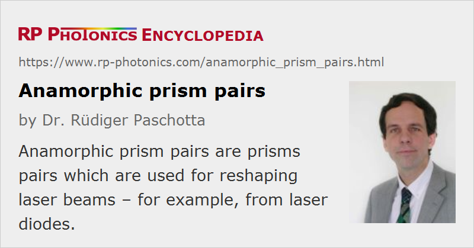

Anamorphic Prism Pairs
Definition: prisms pairs for reshaping laser beams
German: anamorphes Prismenpaar
How to cite the article; suggest additional literature
Author: Dr. Rüdiger Paschotta
An anamorphic prism pair is a pair of prisms which is usually used for reshaping the profile of a laser beam. For example, the elliptical beam from a laser diode can be transformed into a beam with circular cross-section, as is needed for many applications, by using a prism pair as a beam expander for only one direction (e.g., the horizontal one). Of course, one can also just modify the ellipticity, or convert a circular beam into an elliptical one.
The principle of beam shaping with anamorphic prism pairs is not based on focusing effects (i.e., changes of wavefront curvature), but rather on changes of the beam radius for refraction at flat prism interfaces. Such changes occur at the interfaces of any prism (except for normal incidence), because the angle of the beam against the surface-normal direction is different inside and outside according to Snell's law (see the article on refraction). However, for a symmetric beam path, where the beam angles against input and output face of the prism are identical, the two changes in beam radius cancel each other. Therefore, one has to use an asymmetric configuration (see Fig. 1). It can be convenient, for example, to have normal incidence (or some small angle) at one interface and Brewster's angle at the other one; that requires an angle between the prism surfaces which equals the internal angle of refraction. Only the former interface (with normal incidence) then requires an anti-reflection coating; the losses on the Brewster interface are minimized for p polarization. In the described configuration, the demagnification factor (ratio of output to input beam radius) of a single prism is equal to the inverse refractive index of the prism material, or the inverse of that for the other orientation. If a prism material with suitable refractive index for the wanted magnification cannot be found, one may arrange the prism for different input and output angles.
A single prism is sufficient for changing the beam radius in one direction, but it also changes the beam direction. By using an anamorphic prism pair, one can obtain an output beam with an unchanged direction, only a position offset. (This is illustrated in Fig. 2.) The two prisms are of course oriented such that they change the beam radius in the same direction. The overall magnification is then the square of the refractive index, or the inverse of that. If the mentioned beam offset also needs to be avoided, one may use a combination of four prisms.
Various Practical Aspects
Anamorphic prisms can be purchased as single items, but also as mounted and properly aligned prism pairs. One may, for example, have a cylindrical package containing a prism pair and being easier to mount in a setup than it would be when using separate prisms. There are also setups with rotatable mounts, where the prism orientations can be precisely realigned by the user.
Due to chromatic dispersion of the prism material, the beam deflection angles of a single prism as well as of a prism pair are somewhat wavelength-dependent. This dispersive effect might be detrimental in some applications. This effect in addition to the limited bandwidth of anti-reflection coatings limits the range of operation wavelengths.
Note that astigmatism e.g. of beams from laser diodes can not be corrected with an anamorphic prism pair, as it does no focusing. (For that purpose, one could e.g. use precisely positioned cylindrical lenses.) On the other hand, it can be advantageous to have a setup which cannot introduce astigmatism – other than e.g. the combination of two lenses, which is an alternative realization of a beam expander. Another advantage of the anamorphic prism pair over a pair of cylindrical lenses is that the transverse positioning is much less critical.
Suppliers
The RP Photonics Buyer's Guide contains 19 suppliers for anamorphic prism pairs. Among them:
Questions and Comments from Users
Here you can submit questions and comments. As far as they get accepted by the author, they will appear above this paragraph together with the author’s answer. The author will decide on acceptance based on certain criteria. Essentially, the issue must be of sufficiently broad interest.
Please do not enter personal data here; we would otherwise delete it soon. (See also our privacy declaration.) If you wish to receive personal feedback or consultancy from the author, please contact him e.g. via e-mail.
By submitting the information, you give your consent to the potential publication of your inputs on our website according to our rules. (If you later retract your consent, we will delete those inputs.) As your inputs are first reviewed by the author, they may be published with some delay.
See also: prism pairs, prisms, anti-reflection coatings, beam shapers, astigmatism, imaging
and other articles in the category general optics
|  |
If you like this page, please share the link with your friends and colleagues, e.g. via social media:
These sharing buttons are implemented in a privacy-friendly way!